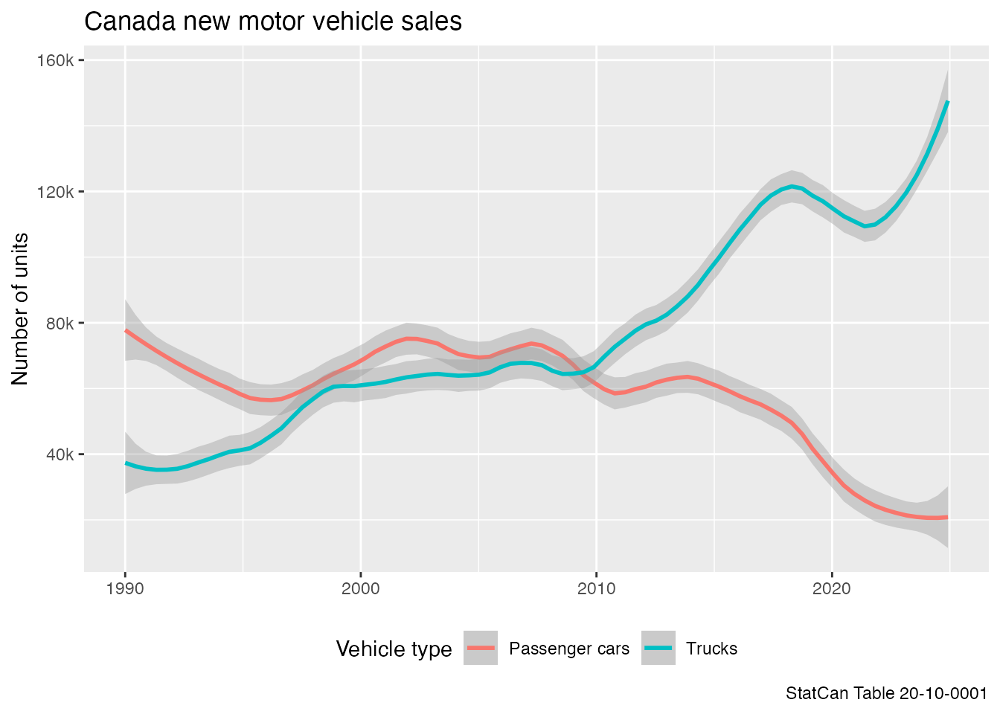

vignettes/working_with_large_tables.Rmd
working_with_large_tables.RmdMost StatCan tables are small in size and can easily processed in
memory. However, some tables are so large that this is not a feasible
strategy. Table 43-10-0024 is one such example and comes
with a CSV file that is several gigabytes in size. In cases like this it
is more useful to store and access the data as a parquet, feather, or
SQLite database format using the get_cansim_connection
function instead of the usual get_cansim. In these
circumstances it is also useful to cache the data for longer than just
the current R session, and the data_cache option allows to
specify a permanent location. It defaults to
getOption("cansim.cache_path"), and if this option is not
set it will only cache the data for the duration of the current
session.
For this vignette we use the (rather small) motor vehicle sales data as an example.
One main difference to the get_cansim method is that
get_cansim_connection does not return data but only a
connection to the database. This allows us to filter the data before
fetching the data into memory. The package supports three formats with
different advantages and disadvantages:
parquet: This is the most efficient format for
importing and storing data, but a bit slower when filtering and reading
data.feather: This is a somewhat less efficient format for
importing and storing data, but slightly faster than parquet
when filtering and reading data.sqlite: This is fairly inefficient format for importing
and storing data, taking a lot more disk space, time and a little more
memory when importing and indexing, but after importing it allows for
very efficient queries and filtering, and additionally allows for
database level summary statistics.By default get_cansim_connection uses the
parquet data format as the best all-around solution, but in use
cases of infrequently updating tables with lots of database queries in
the meantime that need to be fast, and possibly the need for database
level statistics, the sqlite format is likely preferable.
When accessing cached data the package automatically checks if newer
versions are available and issues a warning if the cached version is out
of date. The auto_update argument can be set to
TRUE to automatically refresh the table if needed, or this
can be done manually by setting the refresh argument to
TRUE when calling the function to force a refresh.
If data is not cached the function will download the data first and convert it to the speficied format. The package is designed so that the differences in database formats are mostly abstracted away.
connection.parquet <- get_cansim_connection("20-10-0001") # format='parquet' is the default
#> Accessing CANSIM NDM product 20-10-0001 from Statistics Canada
#> Parsing data to parquet.
glimpse(connection.parquet)
#> FileSystemDataset with 1 Parquet file
#> 163,410 rows x 19 columns
#> $ REF_DATE <string> "1946-01", "1946-01", "1946-01", "1946-01", "…
#> $ GEO <string> "Canada", "Canada", "Canada", "Canada", "Cana…
#> $ DGUID <string> "2016A000011124", "2016A000011124", "2016A000…
#> $ `Vehicle type` <string> "Total, new motor vehicles", "Total, new moto…
#> $ `Origin of manufacture` <string> "Total, country of manufacture", "Total, coun…
#> $ Sales <string> "Units", "Dollars", "Units", "Units", "Dollar…
#> $ `Seasonal adjustment` <string> "Unadjusted", "Unadjusted", "Unadjusted", "Se…
#> $ UOM <string> "Units", "Dollars", "Units", "Units", "Dollar…
#> $ UOM_ID <string> "300", "81", "300", "300", "81", "300", "300"…
#> $ SCALAR_FACTOR <string> "units", "thousands", "units", "units", "thou…
#> $ SCALAR_ID <string> "0", "3", "0", "0", "3", "0", "0", "3", "0", …
#> $ VECTOR <string> "v42169911", "v42169913", "v42169920", "v4216…
#> $ COORDINATE <string> "1.1.1.1.1", "1.1.1.2.1", "1.2.1.1.1", "1.2.1…
#> $ VALUE <double> 2756, 4507, 1102, 1468, 1604, 1654, 2037, 290…
#> $ STATUS <string> NA, NA, NA, NA, NA, NA, NA, NA, NA, NA, NA, N…
#> $ SYMBOL <string> NA, NA, NA, NA, NA, NA, NA, NA, NA, NA, NA, N…
#> $ TERMINATED <string> NA, NA, NA, "t", NA, NA, "t", NA, NA, NA, NA,…
#> $ DECIMALS <string> "0", "0", "0", "0", "0", "0", "0", "0", "0", …
#> $ GeoUID <string> "11124", "11124", "11124", "11124", "11124", …
#> Call `print()` for full schema details
connection.feather <- get_cansim_connection("20-10-0001", format='feather')
#> Accessing CANSIM NDM product 20-10-0001 from Statistics Canada
#> Parsing data to feather.
glimpse(connection.feather)
#> FileSystemDataset with 1 Feather file
#> 163,410 rows x 19 columns
#> $ REF_DATE <string> "1946-01", "1946-01", "1946-01", "1946-01", "…
#> $ GEO <string> "Canada", "Canada", "Canada", "Canada", "Cana…
#> $ DGUID <string> "2016A000011124", "2016A000011124", "2016A000…
#> $ `Vehicle type` <string> "Total, new motor vehicles", "Total, new moto…
#> $ `Origin of manufacture` <string> "Total, country of manufacture", "Total, coun…
#> $ Sales <string> "Units", "Dollars", "Units", "Units", "Dollar…
#> $ `Seasonal adjustment` <string> "Unadjusted", "Unadjusted", "Unadjusted", "Se…
#> $ UOM <string> "Units", "Dollars", "Units", "Units", "Dollar…
#> $ UOM_ID <string> "300", "81", "300", "300", "81", "300", "300"…
#> $ SCALAR_FACTOR <string> "units", "thousands", "units", "units", "thou…
#> $ SCALAR_ID <string> "0", "3", "0", "0", "3", "0", "0", "3", "0", …
#> $ VECTOR <string> "v42169911", "v42169913", "v42169920", "v4216…
#> $ COORDINATE <string> "1.1.1.1.1", "1.1.1.2.1", "1.2.1.1.1", "1.2.1…
#> $ VALUE <double> 2756, 4507, 1102, 1468, 1604, 1654, 2037, 290…
#> $ STATUS <string> NA, NA, NA, NA, NA, NA, NA, NA, NA, NA, NA, N…
#> $ SYMBOL <string> NA, NA, NA, NA, NA, NA, NA, NA, NA, NA, NA, N…
#> $ TERMINATED <string> NA, NA, NA, "t", NA, NA, "t", NA, NA, NA, NA,…
#> $ DECIMALS <string> "0", "0", "0", "0", "0", "0", "0", "0", "0", …
#> $ GeoUID <string> "11124", "11124", "11124", "11124", "11124", …
#> Call `print()` for full schema details
connection.sqlite <- get_cansim_connection("20-10-0001", format='sqlite')
#> Accessing CANSIM NDM product 20-10-0001 from Statistics Canada
#> Parsing data to sqlite.
#> Indexing GEO
#> Indexing Vehicle type
#> Indexing Origin of manufacture
#> Indexing Sales
#> Indexing Seasonal adjustment
#> Indexing REF_DATE
#> Indexing DGUID
#> Indexing GeoUID
glimpse(connection.sqlite)
#> Rows: ??
#> Columns: 19
#> Database: sqlite 3.49.1 [/private/var/folders/z4/gcjq2cd93p3bs5bgp8j2vv240000gp/T/Rtmp7wg5g2/cansim_20100001_sqlite_eng/20100001-eng.sqlite]
#> $ REF_DATE <chr> "1946-01", "1946-01", "1946-01", "1946-01", "1…
#> $ GEO <chr> "Canada", "Canada", "Canada", "Canada", "Canad…
#> $ GeoUID <chr> "11124", "11124", "11124", "11124", "11124", "…
#> $ DGUID <chr> "2016A000011124", "2016A000011124", "2016A0000…
#> $ `Vehicle type` <chr> "Total, new motor vehicles", "Total, new motor…
#> $ `Origin of manufacture` <chr> "Total, country of manufacture", "Total, count…
#> $ Sales <chr> "Units", "Dollars", "Units", "Units", "Dollars…
#> $ `Seasonal adjustment` <chr> "Unadjusted", "Unadjusted", "Unadjusted", "Sea…
#> $ UOM <chr> "Units", "Dollars", "Units", "Units", "Dollars…
#> $ UOM_ID <chr> "300", "81", "300", "300", "81", "300", "300",…
#> $ SCALAR_FACTOR <chr> "units", "thousands", "units", "units", "thous…
#> $ SCALAR_ID <chr> "0", "3", "0", "0", "3", "0", "0", "3", "0", "…
#> $ VECTOR <chr> "v42169911", "v42169913", "v42169920", "v42169…
#> $ COORDINATE <chr> "1.1.1.1.1", "1.1.1.2.1", "1.2.1.1.1", "1.2.1.…
#> $ VALUE <dbl> 2756, 4507, 1102, 1468, 1604, 1654, 2037, 2903…
#> $ STATUS <chr> NA, NA, NA, NA, NA, NA, NA, NA, NA, NA, NA, NA…
#> $ SYMBOL <chr> NA, NA, NA, NA, NA, NA, NA, NA, NA, NA, NA, NA…
#> $ TERMINATED <chr> NA, NA, NA, "t", NA, NA, "t", NA, NA, NA, NA, …
#> $ DECIMALS <chr> "0", "0", "0", "0", "0", "0", "0", "0", "0", "…To make good use of the data we will have to look at the metadata and inspect the member columns and variables available.
get_cansim_table_overview("20-10-0001")
#> Reading CANSIM NDM product 20-10-0001 information from cache.
#> 20100001
#> CANSIM Table 20-10-0001
#> Start Reference Period: 2024-12-01, End Reference Period: 5, Frequency: 1946-01-01
#>
#> Column Geography (11)
#> Newfoundland and Labrador, Prince Edward Island, Nova Scotia, New Brunswick, Quebec, Ontario, Manitoba, Saskatchewan, Alberta, British Columbia and the Territories, ...
#>
#> Column Vehicle type (3)
#> Passenger cars, Trucks, Total, new motor vehicles
#>
#> Column Origin of manufacture (5)
#> North America, Total, overseas, Japan, Other countries, Total, country of manufacture
#>
#> Column Sales (2)
#> Units, Dollars
#>
#> Column Seasonal adjustment (2)
#> Unadjusted, Seasonally adjustedThis gives us an understanding of the available variables. For the purpose of this vignette we are interested in the breakdown of sales units by Vehicle type in Canada overall. The data is stored in its raw form in the database, the only processing done is that it is augmented by the GeoUID.
In order to work with the data we need to load it into memory, which
is done calling collect() on the connection object. If we
want to make use of the additional metadata and processing the
cansim package usually does and the main operations done on the
connection were filtering (and not renaming or de-selecing columns
needed for enriching with metadata) then we can utilize the custom
collect_and_normalize function to do this and at the same
time normalize the data so it will appear the same way as if we had used
the get_cansim function. This will add the category and
hierarchy metadata and the normalized value column. In the case of
sqlite connections we might want to pass the
disconnect = TRUE argument in the
collect_and_normalize function to close the connection
after normalizing the data, or do that manually at a later time via
disconnect_cansim_sqlite(connection). This is not required
for parquet or feather connections.
The collect_and_normalize() interface is designed to be
used in the same way across database formats. In this comparison we also
add the “traditional” get_cansim() approach that reads the
entire table into memory and normalizes the data.
data.parquet <- connection.parquet %>%
filter(GEO=="Canada",
`Seasonal adjustment`=="Unadjusted",
Sales=="Units",
`Origin of manufacture`=="Total, country of manufacture",
`Vehicle type` %in% c("Passenger cars","Trucks")) %>%
collect_and_normalize()
data.parquet %>% head()
#> # A tibble: 6 × 30
#> REF_DATE Date GEO DGUID GeoUID `Vehicle type` Origin of manufactur…¹
#> <chr> <date> <fct> <chr> <chr> <fct> <fct>
#> 1 1946-01 1946-01-01 Canada 2016A… 11124 Passenger cars Total, country of man…
#> 2 1946-01 1946-01-01 Canada 2016A… 11124 Trucks Total, country of man…
#> 3 1946-02 1946-02-01 Canada 2016A… 11124 Passenger cars Total, country of man…
#> 4 1946-02 1946-02-01 Canada 2016A… 11124 Trucks Total, country of man…
#> 5 1946-03 1946-03-01 Canada 2016A… 11124 Passenger cars Total, country of man…
#> 6 1946-03 1946-03-01 Canada 2016A… 11124 Trucks Total, country of man…
#> # ℹ abbreviated name: ¹`Origin of manufacture`
#> # ℹ 23 more variables: Sales <fct>, `Seasonal adjustment` <fct>, VALUE <dbl>,
#> # val_norm <dbl>, UOM <chr>, UOM_ID <chr>, SCALAR_FACTOR <chr>,
#> # SCALAR_ID <chr>, VECTOR <chr>, COORDINATE <chr>, STATUS <chr>,
#> # SYMBOL <chr>, TERMINATED <chr>, DECIMALS <chr>, `Hierarchy for GEO` <chr>,
#> # `Classification Code for Vehicle type` <chr>,
#> # `Hierarchy for Vehicle type` <chr>, …
data.feather <- connection.feather %>%
filter(GEO=="Canada",
`Seasonal adjustment`=="Unadjusted",
Sales=="Units",
`Origin of manufacture`=="Total, country of manufacture",
`Vehicle type` %in% c("Passenger cars","Trucks")) %>%
collect_and_normalize()
data.feather %>% head()
#> # A tibble: 6 × 30
#> REF_DATE Date GEO DGUID GeoUID `Vehicle type` Origin of manufactur…¹
#> <chr> <date> <fct> <chr> <chr> <fct> <fct>
#> 1 1946-01 1946-01-01 Canada 2016A… 11124 Passenger cars Total, country of man…
#> 2 1946-01 1946-01-01 Canada 2016A… 11124 Trucks Total, country of man…
#> 3 1946-02 1946-02-01 Canada 2016A… 11124 Passenger cars Total, country of man…
#> 4 1946-02 1946-02-01 Canada 2016A… 11124 Trucks Total, country of man…
#> 5 1946-03 1946-03-01 Canada 2016A… 11124 Passenger cars Total, country of man…
#> 6 1946-03 1946-03-01 Canada 2016A… 11124 Trucks Total, country of man…
#> # ℹ abbreviated name: ¹`Origin of manufacture`
#> # ℹ 23 more variables: Sales <fct>, `Seasonal adjustment` <fct>, VALUE <dbl>,
#> # val_norm <dbl>, UOM <chr>, UOM_ID <chr>, SCALAR_FACTOR <chr>,
#> # SCALAR_ID <chr>, VECTOR <chr>, COORDINATE <chr>, STATUS <chr>,
#> # SYMBOL <chr>, TERMINATED <chr>, DECIMALS <chr>, `Hierarchy for GEO` <chr>,
#> # `Classification Code for Vehicle type` <chr>,
#> # `Hierarchy for Vehicle type` <chr>, …
data.sqlite <- connection.sqlite %>%
filter(GEO=="Canada",
`Seasonal adjustment`=="Unadjusted",
Sales=="Units",
`Origin of manufacture`=="Total, country of manufacture",
`Vehicle type` %in% c("Passenger cars","Trucks")) %>%
collect_and_normalize()
data.sqlite %>% head()
#> # A tibble: 6 × 30
#> REF_DATE Date GEO DGUID GeoUID `Vehicle type` Origin of manufactur…¹
#> <chr> <date> <fct> <chr> <chr> <fct> <fct>
#> 1 1946-01 1946-01-01 Canada 2016A… 11124 Passenger cars Total, country of man…
#> 2 1946-01 1946-01-01 Canada 2016A… 11124 Trucks Total, country of man…
#> 3 1946-02 1946-02-01 Canada 2016A… 11124 Passenger cars Total, country of man…
#> 4 1946-02 1946-02-01 Canada 2016A… 11124 Trucks Total, country of man…
#> 5 1946-03 1946-03-01 Canada 2016A… 11124 Passenger cars Total, country of man…
#> 6 1946-03 1946-03-01 Canada 2016A… 11124 Trucks Total, country of man…
#> # ℹ abbreviated name: ¹`Origin of manufacture`
#> # ℹ 23 more variables: Sales <fct>, `Seasonal adjustment` <fct>, VALUE <dbl>,
#> # val_norm <dbl>, UOM <chr>, UOM_ID <chr>, SCALAR_FACTOR <chr>,
#> # SCALAR_ID <chr>, VECTOR <chr>, COORDINATE <chr>, STATUS <chr>,
#> # SYMBOL <chr>, TERMINATED <chr>, DECIMALS <chr>, `Hierarchy for GEO` <chr>,
#> # `Classification Code for Vehicle type` <chr>,
#> # `Hierarchy for Vehicle type` <chr>, …
data.memory <- get_cansim("20-10-0001") %>%
filter(GEO=="Canada",
`Seasonal adjustment`=="Unadjusted",
Sales=="Units",
`Origin of manufacture`=="Total, country of manufacture",
`Vehicle type` %in% c("Passenger cars","Trucks"))
#> Accessing CANSIM NDM product 20-10-0001 from Statistics Canada
#> Parsing data
data.memory %>% head()
#> # A tibble: 6 × 30
#> REF_DATE Date GEO DGUID GeoUID `Vehicle type` Origin of manufactur…¹
#> <chr> <date> <fct> <chr> <chr> <fct> <fct>
#> 1 1946-01 1946-01-01 Canada 2016A… 11124 Passenger cars Total, country of man…
#> 2 1946-01 1946-01-01 Canada 2016A… 11124 Trucks Total, country of man…
#> 3 1946-02 1946-02-01 Canada 2016A… 11124 Passenger cars Total, country of man…
#> 4 1946-02 1946-02-01 Canada 2016A… 11124 Trucks Total, country of man…
#> 5 1946-03 1946-03-01 Canada 2016A… 11124 Passenger cars Total, country of man…
#> 6 1946-03 1946-03-01 Canada 2016A… 11124 Trucks Total, country of man…
#> # ℹ abbreviated name: ¹`Origin of manufacture`
#> # ℹ 23 more variables: Sales <fct>, `Seasonal adjustment` <fct>, VALUE <dbl>,
#> # val_norm <dbl>, UOM <chr>, UOM_ID <chr>, SCALAR_FACTOR <chr>,
#> # SCALAR_ID <chr>, VECTOR <chr>, COORDINATE <chr>, STATUS <chr>,
#> # SYMBOL <chr>, TERMINATED <chr>, DECIMALS <chr>, `Hierarchy for GEO` <chr>,
#> # `Classification Code for Vehicle type` <chr>,
#> # `Hierarchy for Vehicle type` <chr>, …We note that the syntax, and the resulting data frames, are identical.
With all three data formats producing the same output we can now work
with the data as if it was fetched and subsequently filtered via
get_cansim.
Given the data we can further filter the date range and plot it.
data.parquet %>%
filter(Date>=as.Date("1990-01-01")) %>%
ggplot(aes(x=Date,y=val_norm,color=`Vehicle type`)) +
geom_smooth(span=0.2,method = 'loess', formula = y ~ x) +
theme(legend.position="bottom") +
scale_y_continuous(labels = function(d)scales::comma(d,scale=10^-3,suffix="k")) +
labs(title="Canada new motor vehicle sales",caption="StatCan Table 20-10-0001",
x=NULL,y="Number of units")
To improve read performance of parquet and feather
data one can specify a partioning argument when calling
get_cansim_connection. This will partition the data by the
specified columns. This can be useful when filtering by these columns as
it will only read the relevant partitions and greatly increase read
performance with a sight cost to size on disk. If for example a dataset
is mostly accessed by filtering on geographic regions, it migh be useful
to partition by GeoUID, or the GEO column if
querying data by name. More than one partitioning column can be
specified, but this is only helpful for very large datasets with a high
number of dimensions. A parquet dataset that is partitioned
with the subsequent queries in mind is often faster in data retrieval
than an index SQLite database. The arrow package has
more guidance on partitioning and the tradeoffs.
Partitioning happens on initial data import and changing the
partitioning parameter in subsequent calls to
get_cansim_connection() won’t have any effect, althoug a
warning will get issued if the specified partitioning is not empty and
differs from the initial paritioning. In some cases, for example when
doing lots of data queries on the dataset, it might make sense to
occasionally change the partitioning of the data in order to optimize
read performance. This can be done with the
cansim_repartition_cached_table() that takes a
new_partitioning argument. Repartitioning happnes fairly
fast, taking up to several seconds on fairly large tables where the
original CSV is several gigabytes in size.
Since we now have the option of a more permanent cache we should take
care to manage that space properly. The
list_cansim_sqlite_cached_tables function gives us an
overview over the cached data we have.
list_cansim_cached_tables()
#> # A tibble: 3 × 10
#> cansimTableNumber language dataFormat timeCached niceSize rawSize
#> <chr> <chr> <chr> <dttm> <chr> <dbl>
#> 1 20-10-0001 eng feather 2025-05-08 21:33:04 10.5 Mb 11021778
#> 2 20-10-0001 eng parquet 2025-05-08 21:32:59 1.1 Mb 1133941
#> 3 20-10-0001 eng sqlite 2025-05-08 21:33:07 47.1 Mb 49410048
#> # ℹ 4 more variables: title <chr>, path <chr>, timeReleased <dttm>,
#> # upToDate <lgl>If we want to free up disk space we can remove a cached table or several tables. The following call will remove all cached “20-10-0001” tables in all formats and languages. Before that we disconnect the connection to the sqlite database.
disconnect_cansim_sqlite(connection.sqlite)
remove_cansim_cached_tables("20-10-0001")
#> Removing feather cached data for 20-10-0001 (eng)
#> Removing parquet cached data for 20-10-0001 (eng)
#> Removing sqlite cached data for 20-10-0001 (eng)